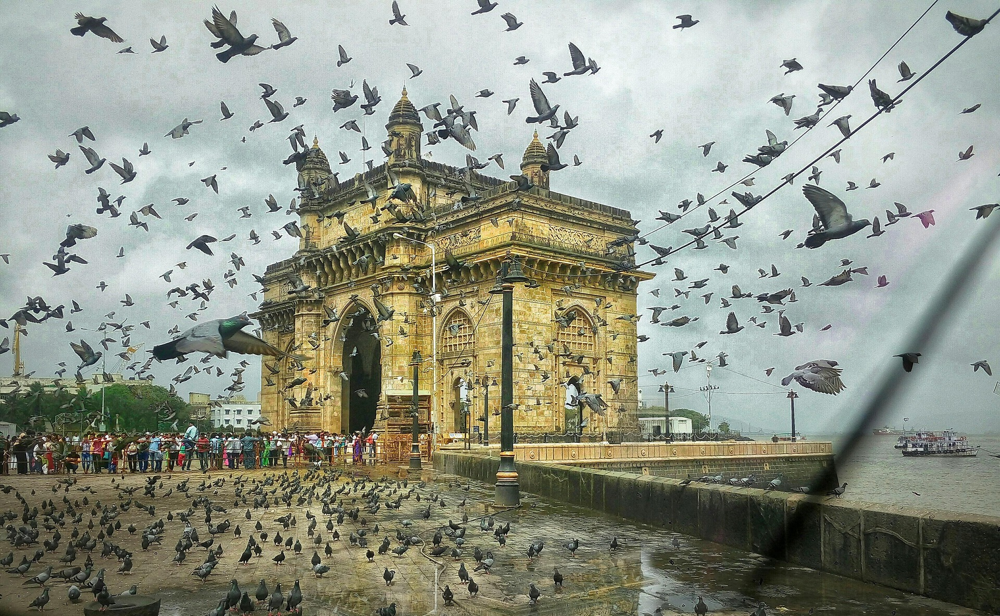
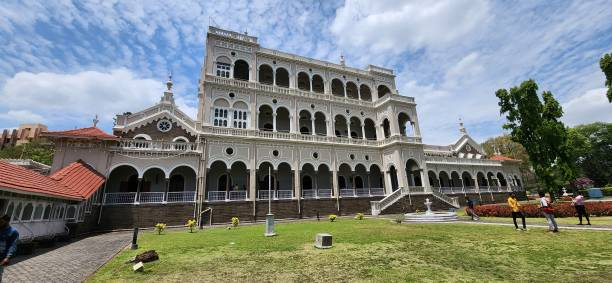
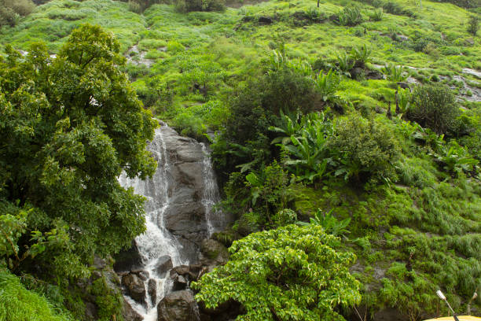
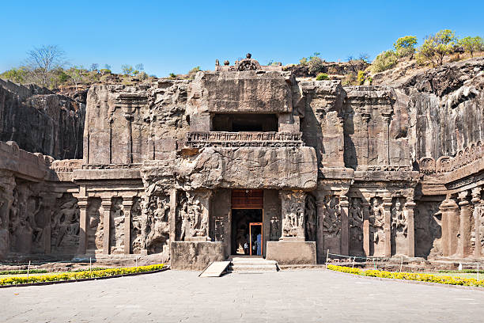
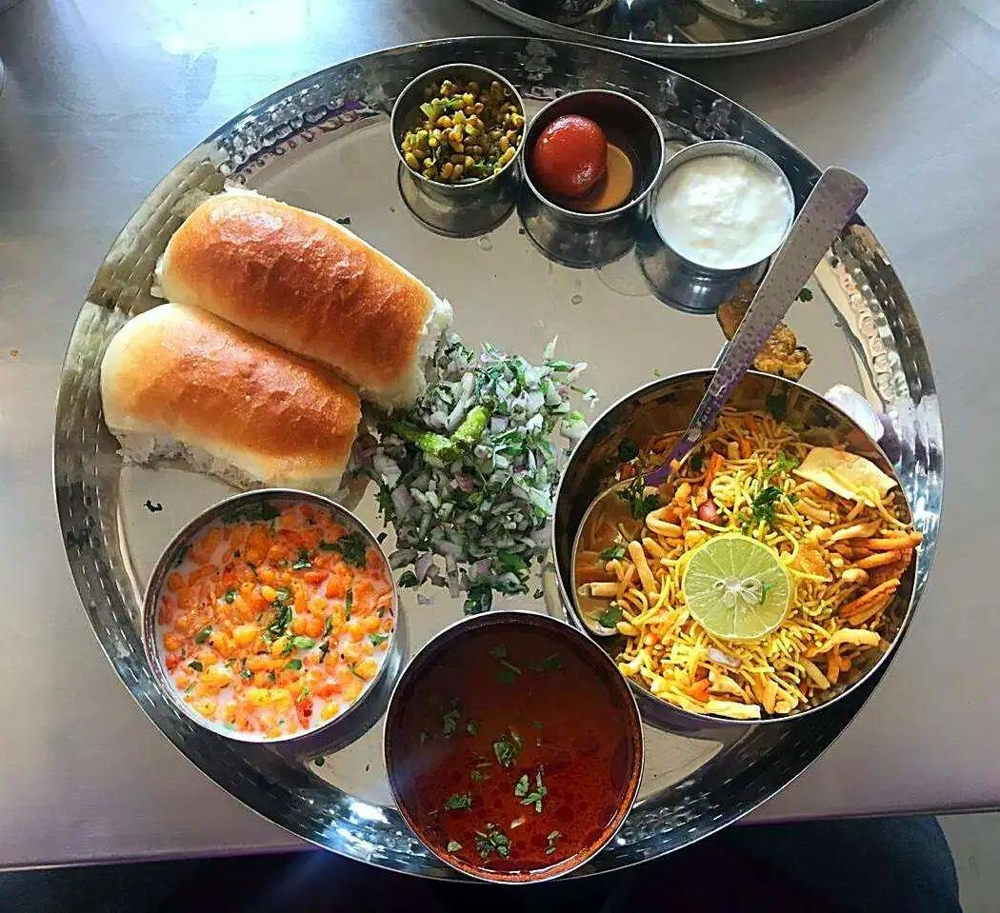

01
Mumbai
City of Dreams — world-famous for Gateway of India, Victorian Gothic architecture of CST, Marine Drive Queen's Necklace, and Bollywood studios.

Discover the land of Chhatrapati Shivaji Maharaj's hill forts, UNESCO ancient rock-cut caves, Arabian Sea coastlines, energetic metropolis rhythms, and rich Marathi heritage.
Explore Maharashtra ↓Maharashtra is India's powerhouse of commerce, cinema, and history — bridging rugged Sahyadri mountain strongholds with pristine Konkan shores and vibrant urban centers.
From the iconic sea-facing boulevard of Marine Drive in Mumbai and the Peshwa seat of Pune to the mist-clad plateaus of Lonavala and ancient painted rock sanctuaries of Ajanta, Maharashtra offers a multifaceted journey for every traveler.
Celebrated historic cities, hill sanctuaries, and ancient rock-cut marvels across Maharashtra.

City of Dreams — world-famous for Gateway of India, Victorian Gothic architecture of CST, Marine Drive Queen's Necklace, and Bollywood studios.

Oxford of the East & cultural capital — celebrated for Shaniwar Wada, Sinhagad Fort, Aga Khan Palace, and historic Maratha traditions.

Scenic Sahyadri hill retreats known for mist-covered cliff viewpoints, Karla-Bhaja Buddhist caves, Rajmachi Fort, and monsoon waterfalls.

UNESCO World Heritage rock-hewn monuments featuring ancient Buddhist frescoes and the world's largest monolithic rock excavation, Kailasa Temple.
Maharashtrian cuisine offers a vibrant contrast — from fiery Kolhapuri rassa curries and Konkan coconut seafood to beloved street snacks and sweet festive treats.

Over 350 hill, sea, and land forts including Raigad, Shivneri, and Murud-Janjira preserving the military legacy of Chhatrapati Shivaji Maharaj.
A grand 10-day cultural festival initiated as a public celebration by Lokmanya Tilak, marked by Dhol-Tasha beats and Visarjan processions.
High-energy Lavani dance performed to traditional Dholki rhythms in nine-yard Nauvari sarees, alongside heroic ballad recitations of Povada.
Ancient tribal geometric Warli wall paintings and luxurious handwoven Paithani silk sarees distinguished by pure gold zari peacock borders.
Discover all 28 states, local food specialties, and centuries of living traditions.
← Back to All States